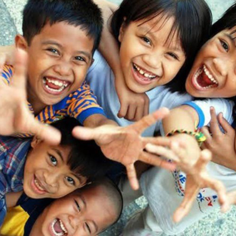
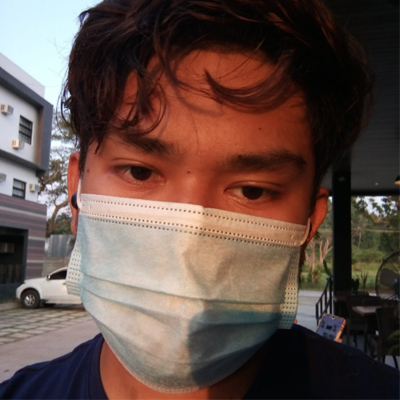
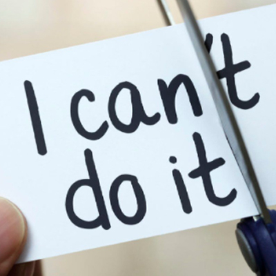
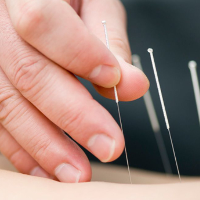
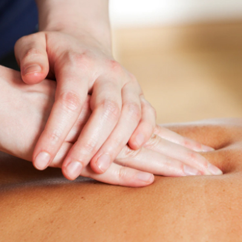
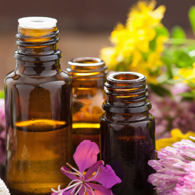
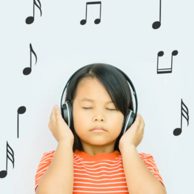

Filipino Youth Against Drug Addiction (FYADA) is an anti-drug project/campaign that is founded by four HUMSS students from the Marinduque State College in the Philippines. Its main objective is to diminish or eradicate drug use among individuals– especially students and teenagers. We firmly believe that various forms of addiction such as drug and alcohol addiction, does not provide and individual the comfort he/she needs. Drugs only undermine their physical, mental, and spiritual well-being, which hampers their individual growth, self-mastery, and self-care. We believe that by inviting addicted individuals to turn towards artistic creation and other recreational activities, we can eliminate their sense of drug dependency.
Our Mission:
To transform substance and drug addicts into powerful, effective, and inspiring individuals, and to sculpt them towards civilized role-models of the nation.
Our Vision:
To eradicate illegal substance use, and create a society that promotes and encourages the future generation to use sports, artistic creation and music as an alternative coping mechanism, granting self-growth, self-discovery and self-gaiety to each individual.
What's with FYADA?

Our Purpose:
In pursuit of eliminating the threat of illegal drugs and substances, we aim to work towards a drug-free society by encouraging individuals to pour their energy towards creative, productive, self-improving, and eco-friendly activities. We shall work towards by first spreading awareness through the use of ICT Communication Services/Social media sites, etc. Once our program gians enough recognition we shall also attempt to hold various recreational, artistic, and green programs which shall alleviate one’s need and dependency for illegal drugs.
How Can we do it?
Our Project's actions:
It is our mission to transform ill, and drug-addicted individuals into role models and effective members of the society. Through forming various activities for children, teenagers, and as well as adults who wish to reinvent themselves, we aim to transform our society into a clean and drug-free habitat.
We wish to fulfill our goal by forming different clubs and groups in order for individuals to unravel and discover their hidden talents. With the help of professionals who desire to volunteer, we shall also hold public seminars and various programs in order to fortify the credibility and impact of our program. Furthermore, our project is also an advocate of Environmental Conservation. We shall also invite all our members from the founders, all the way to the volunteers, to practice basic “green” habits in order to prolong the well-being of our only home; planet Earth.
The Founders of FYADA
As I witness heinous crimes involving drugs, I felt like we had to make a change. We have to really grapple and finally knock down drug addiction. We must do whatever it takes to eradicate this poison for our society. We must act now, or never.
Rianna Quevas
Page Admin/Graphic Designer
As a student athlete, I always wondered why individuals the same age as I, engage in very harmful substances. That said, I shall utilize my skills in sports in order to build a strong foundation agains the battle versus addiction.
John Delmar Mambil
Page Admin/Student Athlete
Sticks and stones, shall break thy bones. Drugs? It shall break the mind, and body. As a young writer from the province, I shall turn my words into swords in order to pierce through the continuously emerging problem of drug addiction.
Aijay Narzoles
Page Admin/Writer
Being around with computers often, I have developed a wide range of skills and expertise in the IT field. I realized that I can further extend my reach, and help the individuals struggling from addiction. Technology shall be on our side.

Clouie Sevilleno
Web Developer/Graphic Designer
Drug Addiction
What is Drug Addiction?
Many people don't understand why or how other people become addicted to drugs. They may mistakenly think that those who use drugs lack moral principles or willpower and that they could stop their drug use simply by choosing to. In reality, drug addiction is a complex disease, and quitting usually takes more than good intentions or a strong will. Drugs change the brain in ways that make quitting hard, even for those who want to. Fortunately, researchers know more than ever about how drugs affect the brain and have found treatments that can help people recover from drug addiction and lead productive lives.
What Is drug addiction?
Addiction is a chronic disease characterized by drug seeking and use that is compulsive, or difficult to control, despite harmful consequences. The initial decision to take drugs is voluntary for most people, but repeated drug use can lead to brain changes that challenge an addicted person’s self-control and interfere with their ability to resist intense urges to take drugs. These brain changes can be persistent, which is why drug addiction is considered a "relapsing" disease—people in recovery from drug use disorders are at increased risk for returning to drug use even after years of not taking the drug.
It's common for a person to relapse, but relapse doesn't mean that treatment doesn’t work. As with other chronic health conditions, treatment should be ongoing and should be adjusted based on how the patient responds. Treatment plans need to be reviewed often and modified to fit the patient’s changing needs.
What happens to the brain when a person takes drugs?
Most drugs affect the brain's "reward circuit," causing euphoria as well as flooding it with the chemical messenger dopamine. A properly functioning reward system motivates a person to repeat behaviors needed to thrive, such as eating and spending time with loved ones. Surges of dopamine in the reward circuit cause the reinforcement of pleasurable but unhealthy behaviors like taking drugs, leading people to repeat the behavior again and again.
As a person continues to use drugs, the brain adapts by reducing the ability of cells in the reward circuit to respond to it. This reduces the high that the person feels compared to the high they felt when first taking the drug—an effect known as tolerance. They might take more of the drug to try and achieve the same high. These brain adaptations often lead to the person becoming less and less able to derive pleasure from other things they once enjoyed, like food, sex, or social activities.
Long-term use also causes changes in other brain chemical systems and circuits as well, affecting functions that include:
learning
judgment
decision-making
stress
memory
behavior
Despite being aware of these harmful outcomes, many people who use drugs continue to take them, which is the nature of addiction.
Why do some people become addicted to drugs while others don't?
No one factor can predict if a person will become addicted to drugs. A combination of factors influences risk for addiction. The more risk factors a person has, the greater the chance that taking drugs can lead to addiction. For example:
Biology. The genes that people are born with account for about half of a person's risk for addiction. Gender, ethnicity, and the presence of other mental disorders may also influence risk for drug use and addiction.
Environment. A person’s environment includes many different influences, from family and friends to economic status and general quality of life. Factors such as peer pressure, physical and sexual abuse, early exposure to drugs, stress, and parental guidance can greatly affect a person’s likelihood of drug use and addiction.
Development. Genetic and environmental factors interact with critical developmental stages in a person’s life to affect addiction risk. Although taking drugs at any age can lead to addiction, the earlier that drug use begins, the more likely it will progress to addiction. This is particularly problematic for teens. Because areas in their brains that control decision-making, judgment, and self-control are still developing, teens may be especially prone to risky behaviors, including trying drugs.
Can drug addiction be cured or prevented?
As with most other chronic diseases, such as diabetes, asthma, or heart disease, treatment for drug addiction generally isn’t a cure. However, addiction is treatable and can be successfully managed. People who are recovering from an addiction will be at risk for relapse for years and possibly for their whole lives. Research shows that combining addiction treatment medicines with behavioral therapy ensures the best chance of success for most patients. Treatment approaches tailored to each patient’s drug use patterns and any co-occurring medical, mental, and social problems can lead to continued recovery.
More good news is that drug use and addiction are preventable. Results from NIDA-funded research have shown that prevention programs involving families, schools, communities, and the media are effective for preventing or reducing drug use and addiction. Although personal events and cultural factors affect drug use trends, when young people view drug use as harmful, they tend to decrease their drug taking. Therefore, education and outreach are key in helping people understand the possible risks of drug use. Teachers, parents, and health care providers have crucial roles in educating young people and preventing drug use and addiction.
Points to Remember
Drug addiction is a chronic disease characterized by drug seeking and use that is compulsive, or difficult to control, despite harmful consequences.
Brain changes that occur over time with drug use challenge an addicted person’s self-control and interfere with their ability to resist intense urges to take drugs. This is why drug addiction is also a relapsing disease.
Relapse is the return to drug use after an attempt to stop. Relapse indicates the need for more or different treatment.
Most drugs affect the brain's reward circuit by flooding it with the chemical messenger dopamine. Surges of dopamine in the reward circuit cause the reinforcement of pleasurable but unhealthy activities, leading people to repeat the behavior again and again.
Over time, the brain adjusts to the excess dopamine, which reduces the high that the person feels compared to the high they felt when first taking the drug—an effect known as tolerance. They might take more of the drug, trying to achieve the same dopamine high.
No single factor can predict whether a person will become addicted to drugs. A combination of genetic, environmental, and developmental factors influences risk for addiction. The more risk factors a person has, the greater the chance that taking drugs can lead to addiction.
Drug addiction is treatable and can be successfully managed.
More good news is that drug use and addiction are preventable. Teachers, parents, and health care providers have crucial roles in educating young people and preventing drug use and addiction.
Learn more
For information about understanding drug use and addiction, visit:
National Institute on Drug Abuse; National Institutes of Health; U.S. Department of Health and Human Services.
How do we combat addiction?
Listed below are some suggested ways on how one can recover from addiction. But first, let us look at drug abstinence through the spectacles of psychologist, Dr. Jordan Peterson.
Overcoming the nature of drug addiction can be difficult and challenging, but it is definitely not impossible. Change is possible with the right kind of treatment and support along with self-help and determination. If you have tried and failed to overcome an addiction, don’t think that you’ve been defeated. The road to recovery can be bumpy and it can take you through the wrong turns, but all you need to do is to keep trying till you succeed.

1. Motivate Yourself
The toughest step toward recovery is deciding to bring about change for yourself. It is normal to have feelings of uncertainty whether you are ready for it or not. It is okay to be confused. But, the key here is to not let go of that thought to make your life different.
Recovery from addiction requires time, motivation, and support. The first person that can help you overcome addiction is you. Believing that you can recover is important, too.
Relapse or returning to drug use is common with addiction. To prevent relapses, avoid returning to the people, places, or things that are associated with your addiction. Seeking help from friends and family members is also one of the most important initial steps to overcome addiction.
2. Practice meditation
The purpose of meditation is to calm and quiet the mind. Meditation promotes relaxation and provides mental clarity. Meditation, in particular, mindfulness meditation has been criticized due to the lack of scientific evidence to support the claim that engaging in meditation can help addicts.
There is a study that reported a decreased drug abuse with Transcendental Meditation.
Individuals who regularly practiced Transcendental Meditation decreased or stopped abusing drugs, decreased or stopped engaging in drug-selling activities, and changed their attitudes in the direction of discouraging others from abusing drugs. The magnitude of these changes is directly proportional to the individual’s duration of practice. This means that the longer an individual practiced this meditation the stronger were the changes.
3. Practice Yoga Sessions
Yoga along with other substance abuse treatment programs can help in overcoming drug addiction. Yoga uses physical postures to connect the body and mind. This technique also uses certain breathing exercises. Yoga helps an individual to gain self-awareness and focus attention inward.
There is a study that proposes that a whole-system approach can be used to break the cycle of stress, negative emotions, and addictive behavior by creating a sense of self-awareness, self-control, and self-realization.
Practicing traditional elements of yoga and mindfulness at any point in the vicious cycle of substance use can help improve attention, increase concentration, enhance emotion regulation, and facilitate personal and spiritual growth through self-observation.

4. Acupuncture
Acupuncture is one of the practices used in traditional Chinese medicine. In this technique,thin needles are inserted through the skin. This is known to stimulate specific points on the body.
The efficacy of acupuncture for the treatment of substance abuse is debatable. However, there is a study that shows, to a certain extent, how acupuncture can help with substance abuse. The study also claims that prominent effects of acupuncture are increases in the levels of enkephalin, epinephrine, endorphin, serotonin, norepinephrine, and dopamine in the central nervous system and plasma that might mediate substance abuse.
Acupuncture is often used to reduce symptoms related to withdrawal. It stimulates detoxification, promotes a heightened sense of relaxation, and encourages endorphin production thereby making it an excellent tool for overcoming addiction.5

5. Massage Therapy
Body massages may help in overcoming addiction. More importantly, it may with controlling withdrawal symptoms. Massages relax the body and mind, improve circulation, and can energize your life.
The results of a study show that self-massages can improve the moods of smokers as well as reduce their withdrawal symptoms. Further, the study also showed that self-massages may help in reducing the number of cigarettes smoked.
If you don’t get the time for a full body massage, a head massage is also beneficial. The head is a sensitive and nerve-rich area of the human body; hence, head massages can be very beneficial especially for those battling addictions.

6. Aromatherapy
Aromatherapy can be very helpful in giving up addictions. The nasal cavity is in close proximity to the brain, and various smells can open up neural pathways, lift moods, and promote beneficial states of consciousness.
Aromatherapy uses essential oils and these oils used also have other healing properties. You can add the essential oils to a warm bath. Ideally, 5–10 drops of the oil in a tub full of water or you can just use them like smelling salts during the day. Just open the bottle and inhale the aroma.

7. Music Therapy
Art therapy may be used to provide emotional release, self-expression, stress management, and adjustment to recovery. Art therapy helps decrease an addict’s denial of addiction, increase the addict’s motivation to change, provide a secure outlet for painful emotions, and reduce the shame of addiction.
Language may not always be an effective way to convey feelings. Through art therapy, the feelings of an addict that cannot be explained can be communicated in the form of a creative work.
Much the same way, music therapy is also beneficial for an individual struggling to overcome a particular addiction. Music improves the addict’s ability to recognize and accept emotions, promotes self-awareness and self-expression, increases self-esteem, and reduces stress levels.
A study providing positive outcomes of using these therapies in substance abuse treatment centers has been made. However, the use of art and music therapy in treatment centers has been understudied.9 Art and music therapies may be used as complements to other standard conventional treatments.
Addictions can be hard to overcome. The first step is to accept there is a problem, and the second step is to do something about it.
Always remember, there is no shame in trying to become a better you!
We shall hold educational webcasts spreading the dangers of drug addiction and ways to grapple with them. Professionals are invited to volunteer to these events.
Along with the members of our program, we shall hold and promote clean-up drives and eco-friendly activities, that shall not only help eliminate drug addictions, but also help our home planet stand up once more.
A Message from FYADA:
Keep in touch with FYADA
Contact Us
Our Adress
4900, Tanza, Boac, Marinduque, Philippines
Social Profiles
Send a Message to one of our Founders:
aijaynarzoles@gmail.com
ynauxe@gmail.com
mambiljohndelmar@gmail.com
sevillenoclouie@gmail.com
Contact our Phone!
+63 961 265 6855
Support FYADA:
The future burns bright for these drug-addicts; however we require your support. Any donation will do as long as it stems from hard-earned pesos and not from illegal sources. We will start our project by spreading it online, by means of cashless activities, and shall kick-start our project as soon as possible. We shall purchase the required equipment(s) as soon as we acquire the sufficient budget to do so. We are also requesting for voluntary support from professionals i.e., Teachers, Doctors, and Psychiatrists, in order to boost the credibility and overall impact of our proposed program. Their hard work shall be paid by the smiles of each lost soul they are helping. For more details, kindly rearch us through the contact information above.